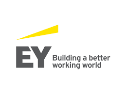

Past Work Experience
I have worked as an intern for Fidelity Investments in their Asset Managament Risk department. Here I assisted with risk assesments on legal entity mergers and trade allocation procedures. I also researched their business procedures within Asset Management for automation opportunities. I developed a prototype in Java that automated the data entry of financial reports into analyst models for their counter party risk department.
At Ernst & Young I interned with their Technology Risk Consulting practice focusing on the financial services sector. I worked on projects involving cloud risk and assisted my team with identifying client defeciences in their cloud risk analysis. I also contributed to a consolidated industry standard for cloud risk and controls to be used on additional projects. Following my internship I recieved a full time job offer which I accepted and will begin in Fall of 2022.